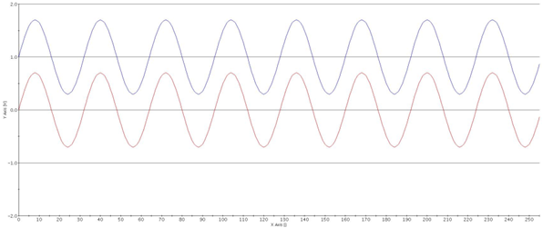
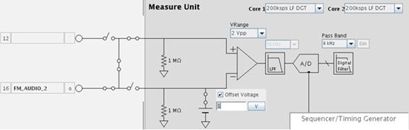

MB-AV8/AV8: Dealing with DC-offsets when digitizing using the LF-digitizers
Daniel Blank, Wolfram Humann, Verigy
Paper ID: 125480 March 2011
Abstract
This application note discusses the recommended settings for digitizing signals with DC-offset using the LF-digitizer of the MB-AV8, AV8.
1. Recommendations for digitizing signals with DC-offset
The LF-digitizer in the MB-AV8/AV8 is a 2 core audio digitizer. An audio digitizer usually deals with signals that are free of DC-components (AC-coupled).
Therefore for the best performance and consistent operation of the LF-digitizers it is mandatory to use the smallest possible range depending on the peak-peak voltage of your signal and any DC-component has to be compensated using an offset voltage in the analog setup.
This ensures the best dynamic range and consistent operation of the digitizers (see also paragraph 3).
For example, when capturing the blue signal (1.4 Vpp @ 1 Vdc) in the figure below, you should program the offset voltage to 1 V resulting in the red signal for the digitizers.

Figure 1
2. How to apply the DC-offset compensation
DC-offsets in the signal to be captured have to be compensated by applying the proper DC-offset in the analog setup. It can be done in the GUI if the firmware-based analog control file is used. See figure 2 for an example.

Figure 2 offset compensation in the GUI
When the analog setup API is used, the DC-offset compensation can be specified using the following API vOffset(1.0 V).
3. Tolerable DC-components
When DC-offsets are not compensated it can intermittently happen in very rare cases that the captured signal is distorted by the LF digitizers. This is due to the optimization of the LF-digitizers for audio signals that are typically free of DC components.
The tolerable DC-offsets for the LF-digitizers on the MB-AV8/AV8 are
Tolerable DC components |
VRange |
|---|---|
50 mVdc |
0.4 Vpp |
250 mVdc |
2 Vpp |
750 mVdc |
6 Vpp |
Tolerable DC components |
VRange |
|---|---|
50 mVdc |
0.4 Vpp |
250 mVdc |
2 Vpp |
750 mVdc |
6 Vpp |
4. Summary
To ensure consistent operation of the LF-digitizer and achieve the best performance it is strongly recommended to
- Compensate any DC-components of the signal to be captured using the Offset Voltage.
- Choose the closest VRange depending on the peak-peak value of the signal to be captured.